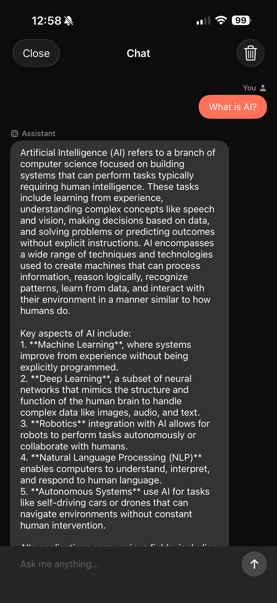

Wally Swift SDK Part 1: Chat with LLMs On-Device

Run LLMs Entirely On-Device with iOS
This is Part 1 of our Wally Swift SDK tutorial series:
- Chat with LLMs (this post) — Project setup and streaming text generation
- Speech-to-Text — Real-time transcription with Whisper
- Text-to-Speech — Natural voice synthesis with Piper
- Voice Pipeline — Full voice assistant with VAD
The promise of on-device AI is compelling: instant responses, complete privacy, and no API costs. But implementing it has traditionally been challenging—managing model formats, optimizing for mobile hardware, and building reliable interfaces.
Wally changes this. It's a production-ready SDK that brings powerful AI capabilities to iOS with a simple, unified API. In this tutorial, we'll set up the SDK and build a streaming chat interface with LLMs.
Why On-Device AI?
| Aspect | Cloud AI | On-Device AI |
|---|---|---|
| Privacy | Data sent to servers | Data stays on device |
| Latency | Network round-trip | Instant local processing |
| Offline | Requires internet | Works anywhere |
| Cost | Per-request billing | One-time download |
For applications handling sensitive data—health, finance, personal conversations—on-device processing isn't just a feature, it's a requirement.
Prerequisites
- Xcode 15.0+ with Swift 5.9
- iOS 17.0+ physical device (required for Parts 2-4 which use the microphone; simulator works for this part)
- Basic familiarity with SwiftUI
- ~250MB storage for the LLM model (Parts 2-4 add ~140MB more)
Project Setup
1. Create a New Xcode Project
Create a new iOS App with SwiftUI interface. Use the following settings:
- Product Name: LocalAIPlayground (or your preferred name)
- Interface: SwiftUI
- Language: Swift
- Storage: None

2. Add the Wally SDK
Add via Swift Package Manager:
- File → Add Package Dependencies...
- Enter:
https://github.com/RunanywhereAI/runanywhere-sdks - For Dependency Rule, select Up to Next Major Version and enter
0.17.4 - Add these products:
Wally— Core SDKWallyLlamaCPP— LLM backendWallyONNX— STT/TTS/VAD backend

After adding the package, verify the dependency is configured correctly in your project's Package Dependencies tab:

The dependency should show:
- Name: runanywhere-sdks
- Location:
https://github.com/RunanywhereAI/runanywhere-sdks - Dependency Rule: Up to Next Major Version —
0.17.4<1.0.0
3. Configure Info.plist
Add required permissions (needed for later tutorials in this series):
1<key>NSMicrophoneUsageDescription</key>2<string>This app needs microphone access to transcribe your speech using on-device AI.</string>34<key>CFBundleIdentifier</key>5<string>$(PRODUCT_BUNDLE_IDENTIFIER)</string>67<key>UIBackgroundModes</key>8<array>9 <string>audio</string>10</array>
SDK Initialization
The SDK requires a specific initialization order:
1import SwiftUI2import Wally3import WallyLlamaCPP4import WallyONNX56@main7struct LocalAIPlaygroundApp: App {8 @State private var isSDKInitialized = false9 @State private var initError: String?1011 var body: some Scene {12 WindowGroup {13 Group {14 if isSDKInitialized {15 ContentView()16 } else {17 ProgressView("Initializing AI...")18 }19 }20 .task { await initializeSDK() }21 }22 }2324 @MainActor25 private func initializeSDK() async {26 do {27 // Step 1: Initialize core SDK28 try Wally.initialize(environment: .development)2930 // Step 2: Register backends BEFORE registering models31 LlamaCPP.register() // For LLM text generation32 ONNX.register() // For STT, TTS, VAD (used in later tutorials)3334 // Step 3: Register the LLM model35 Wally.registerModel(36 id: "lfm2-350m-q4_k_m",37 name: "LiquidAI LFM2 350M",38 url: URL(string: "https://huggingface.co/LiquidAI/LFM2-350M-GGUF/resolve/main/LFM2-350M-Q4_K_M.gguf")!,39 framework: .llamaCpp,40 memoryRequirement: 250_000_00041 )4243 print("✅ Wally SDK v\(Wally.version) initialized")44 isSDKInitialized = true45 } catch {46 print("❌ SDK init failed: \(error)")47 initError = error.localizedDescription48 isSDKInitialized = true // Show UI with error state49 }50 }51}

Architecture Overview
1┌─────────────────────────────────────────────────────┐2│ Wally Core │3│ (Unified API, Model Management) │4├───────────────────────┬─────────────────────────────┤5│ LlamaCPP Backend │ ONNX Backend │6│ ───────────────── │ ───────────────── │7│ • Text Generation │ • Speech-to-Text │8│ • Chat Completion │ • Text-to-Speech │9│ • Streaming │ • Voice Activity (VAD) │10└───────────────────────┴─────────────────────────────┘
Downloading & Loading Models
After registering a model (as shown in the initialization code above), you need to download it once, then load it into memory:
1// Check if already downloaded (avoids re-downloading)2let isDownloaded = await Wally.isModelDownloaded("lfm2-350m-q4_k_m")34if !isDownloaded {5 // Download with progress tracking (~250MB)6 let progressStream = try await Wally.downloadModel("lfm2-350m-q4_k_m")7 for await progress in progressStream {8 print("Download: \(Int(progress.overallProgress * 100))%")9 if progress.stage == .completed { break }10 }11}1213// Load into memory (required before generating text)14try await Wally.loadModel("lfm2-350m-q4_k_m")1516// Verify it's loaded17let isLoaded = await Wally.isModelLoaded18print("Model loaded: \(isLoaded)")
Note: Only one LLM model can be loaded at a time. Loading a different model automatically unloads the current one. The SDK uses
loadModel()for LLMs, but Parts 2-3 will introduceloadSTTModel()andloadTTSVoice()for speech models—these use separate memory pools and can be loaded simultaneously.

Streaming Text Generation
Now for the fun part—generating text with your on-device LLM:
1func generateResponse(to prompt: String) async throws -> String {2 let options = LLMGenerationOptions(3 maxTokens: 256,4 temperature: 0.75 )67 let result = try await Wally.generateStream(prompt, options: options)89 var fullResponse = ""10 for try await token in result.stream {11 fullResponse += token12 // Update UI with each token13 await MainActor.run {14 self.responseText = fullResponse15 }16 }1718 // Get metrics19 let metrics = try await result.result.value20 print("Speed: \(metrics.tokensPerSecond) tok/s")2122 return fullResponse23}

Models Reference
| Model ID | Size | Notes |
|---|---|---|
lfm2-350m-q4_k_m | ~250MB | LiquidAI LFM2, fast, efficient |
What's Next
In Part 2, we'll add speech-to-text capabilities using Whisper, including critical audio format handling that trips up most developers.
Resources
Questions? Open an issue on GitHub or reach out on Twitter/X.